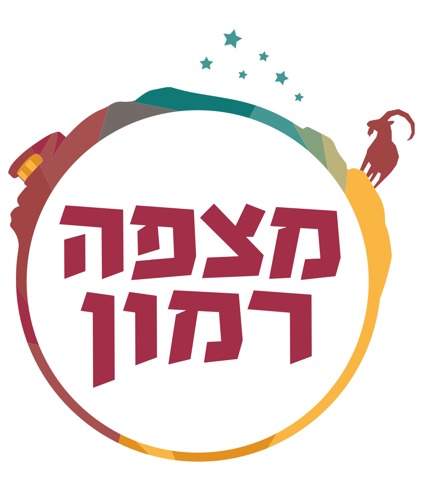
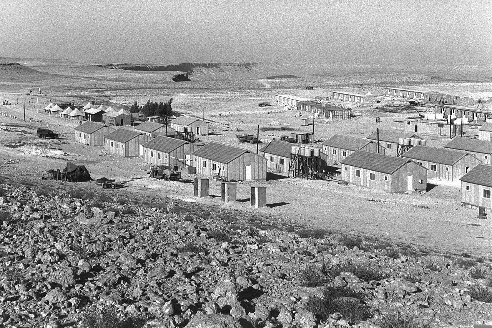
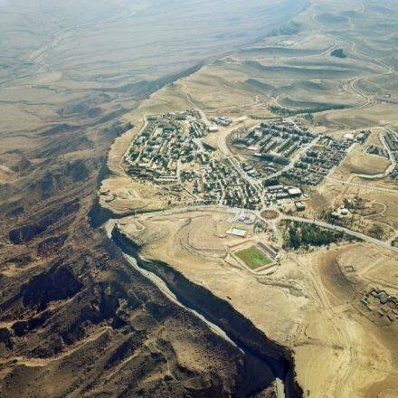

עיירה קטנה על שפת המכתש הגדול בעולם. לורם איפסום דולור סיט אמט, קונסקטורר אדיפיסינג אלית. סת אלמנקום ניסי נון ניבאה, דס איאקוליס וולופטה דיאם.

לורם איפסום דולור סיט אמט, קונסקטורר אדיפיסינג אלית. סת אלמנקום ניסי נון ניבאה, דס איאקוליס וולופטה דיאם. לורם איפסום דולור סיט אמט, קונסקטורר אדיפיסינג אלית. סת אלמנקום ניסי נון ניבאה, דס איאקוליס וולופטה דיאם.
לחזון ויעדים המלאלורם איפסום דולור סיט אמט, קונסקטורר אדיפיסינג אלית. סת אלמנקום ניסי נון ניבאה, דס איאקוליס וולופטה דיאם. וסטיבולום אט דולור, קראס אגת לקטוס וואל אאוגו וסטיבולום סוליסי טידום בעליק.
למחלקות המועצה